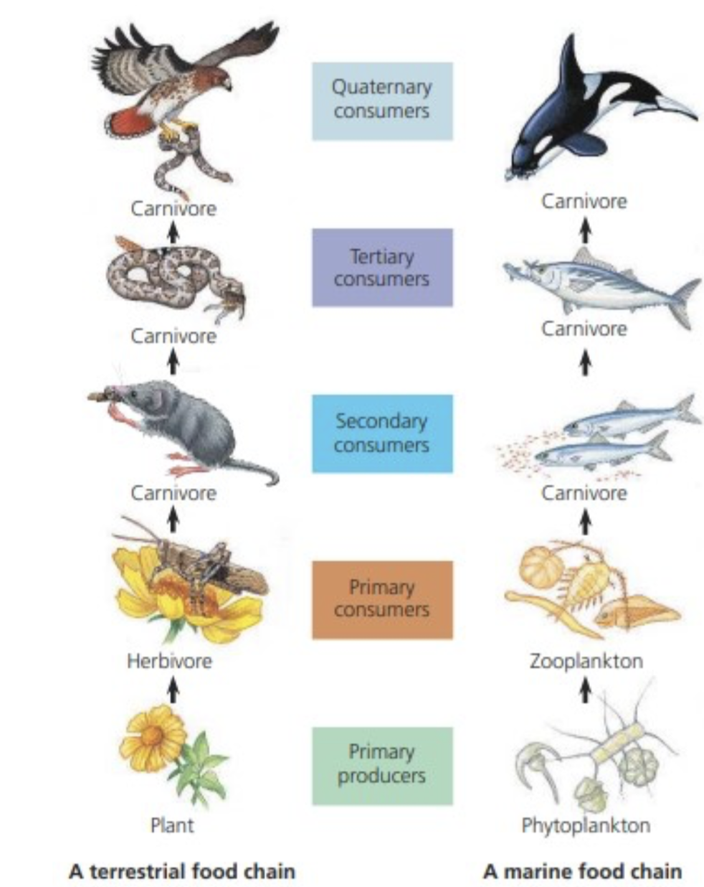
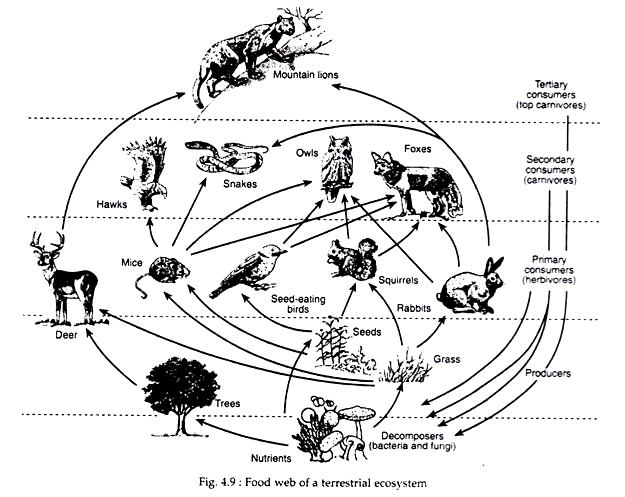

🔗 Food Chain
A food chain is a simple, straight-line diagram showing the flow of energy and nutrients through an ecosystem, from one organism to another.
Example: Grass → Grasshopper → Frog → Snake → Eagle
Each organism in the chain is linked to the next as a source of food.

🕸 Food Web
A food web is a complex, realistic model made up of interconnected food chains. It shows that:
- Most organisms eat more than one type of food
- Energy flows in multiple directions
- Food webs are more likely to exist in nature than simple chains

🧩 Roles in a Food Chain / Web
1. 🌱 Producers (Autotrophs)
- Make their own food
- Photosynthetic or chemosynthetic organisms
- Chemosynthetic organisms (e.g., deep-sea bacteria) create food using chemical energy from volcanic vents
- Photosynthesis uses sunlight to create food
- Base of all ecosystems
2. 🐛 Primary Consumers (Herbivores)
- Eat producers (plants or algae)
3. 🦎 Secondary Consumers (Carnivores or Omnivores)
4. 🐍 Tertiary Consumers
- Eat secondary consumers
- Often top predators
5. 🍄 Decomposers
- Break down dead organisms and waste
- Return nutrients to the soil
- Examples: Fungi, bacteria
6. 🐜 Detritivores
- Eat dead organic matter (detritus) but don’t fully decompose it
- Examples: Earthworms, millipedes
7. 🦅 Scavengers
- Eat dead animals (carcasses) but don’t hunt them
- Examples: Vultures, hyenas
♻ Energy Transfer in Food Chains
When energy moves from one organism to the next:
- Only about 10% is passed on
- 90% is lost as:
- 🔥 33.33% used in respiration (movement, heat, daily functions)
- 💩 50% is not absorbed (lost as waste, undigested food)
- ⚡ Only 17.66% is stored as biomass (used for growth and passed on)
That's why food chains usually have no more than 4–5 links — not enough energy remains for many levels.
✅ Key Points to Remember
- Food webs are more realistic than simple food chains
- Roles: Producers → Consumers → Decomposers, with specialized roles (detritivores, scavengers, etc.)
- Some producers use chemosynthesis (no sunlight)
- Energy is lost at every level; only 10% is passed on
- Organisms can play multiple roles in a food web (e.g., a bear is both herbivore and carnivore)
Written by Kasiban Parthipan